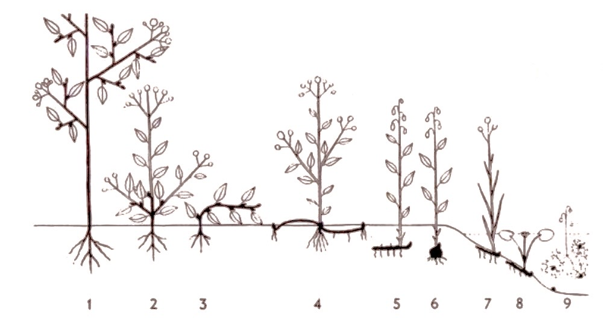
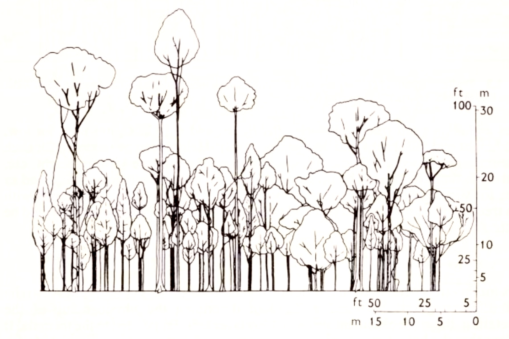
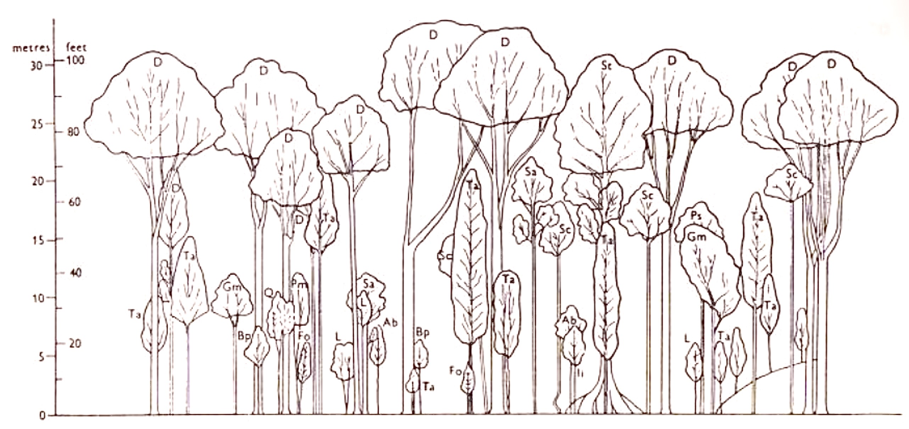
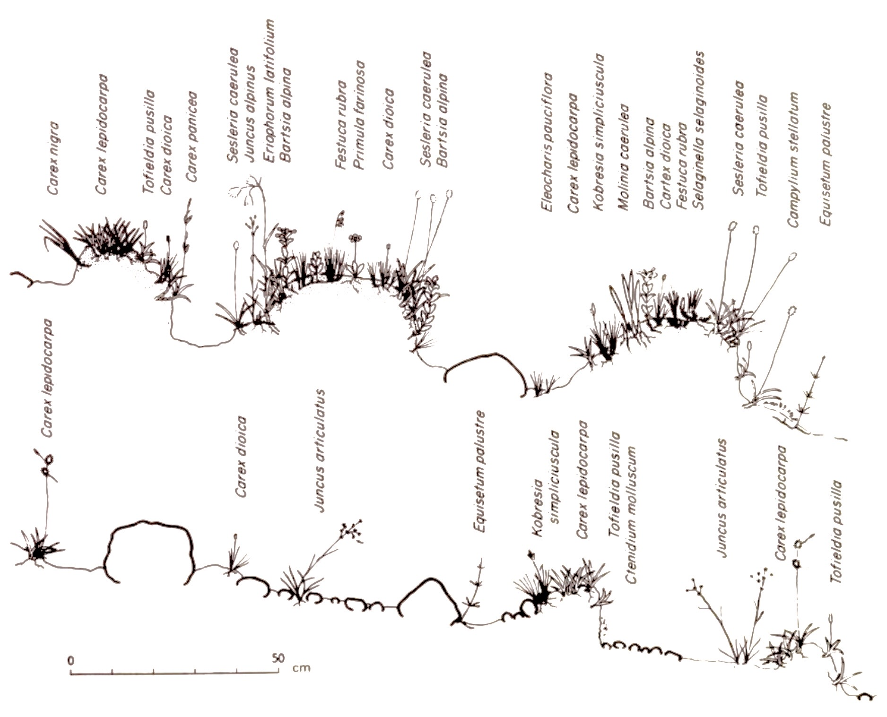
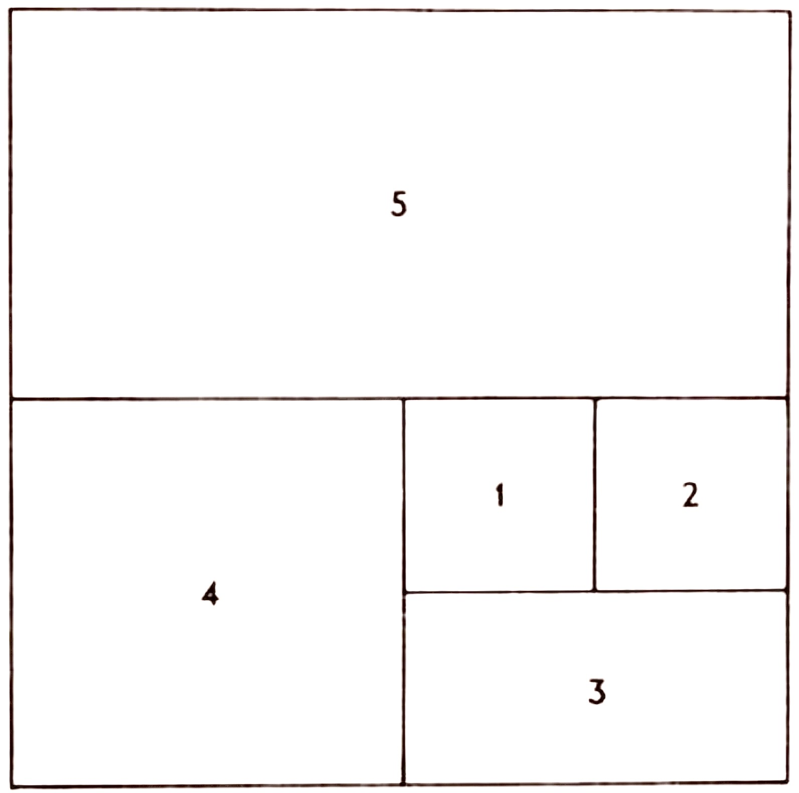

Chapter 1: THE DESCRIPTION OF VEGETATION
Life form. Structure. Stratification of vegetation. Horizontal distribution-mapping techniques. Subjective assessment of abundance-frequency symbols-Braun-Blanquet's system of rating. Quantitative assessment of abundance-density, cover, frequency, yield and performance.
The Description of Vegetation
A considerable proportion of all ecological work in the past and to a considerable extent the present time, has been directed towards the description of vegetation. The object of such description is to enable people other than the observer to build a mental picture of an area and its vegetation and to allow the comparison and ultimate classification of different units of vegetation. Before any serious or detailed work can be commenced in an area it is necessary to know what species are present, their distribution and the relative degree of abundance of each species. Additional information on the morphology of the species characteristic of the area and a general account of the environment are also essential. Thus the floristic composition, simply expressed as a list of species, life form composition and structure of vegetation are a necessary basis of all ecological work; this approach to ecology has dominated the subject until quite recently and will continue to be prominent until an adequate description of all vegetation both on a regional and on a world-wide basis is completed.
Life form
The best-known description and classification of life forms, and the use of life form to construct a biological spectrum are due to Raunkiaer (1909, 1928, 1934). He arranged the life forms of species in a natural series in which the main criterion was the height of perennating buds, and he showed that this criterion appeared to reflect adaptation to climate.
Phanerophytes
The perennating buds or shoot apices borne on aerial shoots.
- EVERGREEN PHANEROPHYTES without bud scales (tropical tree species)
- EVERGREEN PHANEROPHYTES with bud scales
- DECIDUOUS PHANEROPHYTES with bud scales
Each of the above groups can be sub-divided into Nanophanerophytes (<2 m in height), Microphanerophytes (2-8 m), Mesophanerophytes (8-30 m) and Megaphanerophytes (>30 m). Two further groups are usually included – epiphytic Phanerophytes and stem-succulent Phanerophytes.
Chamaephytes
Perennating buds or shoot apices borne very close to the ground.
- (a) SUFFRUTICOSE CHAMAEPHYTES Characterized by more or less erect aerial shoots which die away in part at the onset of an unfavourable season of the year. Perennating buds arise on the lower portions of the erect stems where they are less exposed to the environment. Very characteristic of many parts of the Mediterranean.

- (b) PASSIVE CHAMAEPHYTES Similar to the last group but at the onset of adverse conditions the weakened erect axes fall over and buds arise along the horizontal stems where at ground level they obtain some protection from the environment; e.g. Stellaria holostea.
- (c) ACTIVE CHAMAEPHYTES The vegetative shoots are persistently orientated along the ground usually rooting along their length; e.g. Lysimachia nummularia, Empetrum nigrum.
- (d) CUSHION PLANTS Basically a reduced and very compacted form of the last group.
Hemicryptophytes
Perennating buds at ground level, all above ground parts dying back at the onset of unfavourable conditions. Stolons may or may not be present.
- (a) PROTO HEMICRYPTOPHYTES The lowermost leaves on the stem are less perfectly developed than the upper ones, the perennating buds arise at ground level; e.g. Rubus idaeus.
- (b) PARTIAL ROSETTE PLANTS The best developed leaves form a rosette at the base of the aerial shoot, but some leaves are present on the aerial stems; e.g. Ajuga reptans, Achillea millefolium.
- (c) ROSETTE PLANTS The leaves are restricted to a rosette at the base of the aerial shoot; e.g. Bellis perennis, Taraxacum officinale, Hypochaeris radicata.
Cryptophytes
Perennating buds below ground level or submerged in water.
- (a) GEOPHYTES Rhizome, bulb or tuber geophytes, over-wintering by food stores under ground from which arise the buds to produce the next season's aerial shoots.
- (b) HELOPHYTES Those plants which have their perennating organs in soil or much below water-level with aerial shoots above water-level; e.g. Typha, Alisma.
- (c) HYDROPHYTES Those plants with their perennating buds under water, and with their leaves submerged or floating. Buds may occur on rhizomes as in Nuphar, Nymphaea, or winter buds may become detached from the plant and sink to the bottom and survive the unfavourable season; e.g. Potamogeton obtusifolius, P. pusillus.
Therophytes
Annual species which complete a life history from seed to seed during the favourable season of the year. Their life span can be as short as a few weeks, and they are characteristic of desert regions and cultivated soil where the interference of man protects them from slower growing natural competitors. Using the life form as a basis of comparison it is possible to compare areas which are widely separated geographically and do not contain species common to both (the normal basis of comparison of areas). The life form is assumed to have evolved in direct response to the climatic environment and accordingly the proportion of life forms in an area will give a good indication of its climatic zone. Thus the biological spectrum is a useful measure for comparison on a geographical scale and shows the number of species within each life form group (Table 1.1).
| Denmark | St. Thomas and St. Jan |
|
|---|---|---|
| Mega and Mesophanerophytes (MM) | 1 | 5 |
| Microphanerophytes (M) | 3 | 23 |
| Nanophanerophytes (N) | 3 | 30 |
| Epiphytes (E) | 0 | 1 |
| Stem succulents (S) | 0 | 2 |
| Chamaephytes (Ch) | 3 | 12 |
| Hemicryptophytes (H) | 50 | 9 |
| Geophytes (G) | 11 | 3 |
| Hydrophytes and Helophytes (HH) | 11 | 1 |
| Therophytes (Th) | 18 | 14 |
Raunkiaer gives several interesting examples from which he concludes that the zonation of vegetation progresses from a phanerophytic type in the tropical zone to therophytic in the sub-tropical desert areas, hemicryptophytic in the cold temperature and finally a chamaephytic type in the cold zone (Table 1.2). Similar trends can be seen with increase in altitude which reflects the increasing severity of the climate. Thus there are more Chamaephytes and correspondingly fewer Hemicryptophytes, with increase in altitude in the Alps (Table 1.3). In general the life form spectrum is not of great significance in comparing adjacent areas of vegetation but is of value in the realm of 'Plant Geography'.
| Area | Percentage distribution of the species among the life forms | ||||||||||
|---|---|---|---|---|---|---|---|---|---|---|---|
| (key to symbols in Table 1.1) | |||||||||||
| S | E | MM | M | N | Ch | H | G | HH | Th | ||
| Seychelles | 1 | 3 | 10 | 23 | 24 | 6 | 12 | 3 | 2 | 16 | Tropical forest |
| St. Thomas and St. Jan. | 2 | 1 | 5 | 23 | 30 | 12 | 9 | 3 | 1 | 14 | Tropical forest |
| Ellesmereland | — | — | — | — | — | 23.5 | 65.5 | 8 | 3 | — | Tundra |
| Baffinland | — | — | — | — | 1 | 30 | 51 | 13 | 3 | 2 | Tundra |
| Death Valley, California | 3 | — | — | 2 | 21 | 7 | 18 | 2 | 5 | 42 | Desert |
| Libyan Desert | — | — | — | 3 | 9 | 21 | 20 | 4 | 1 | 42 | Desert |
| The nival region of the Alps |
Percentage distribution of the species among the life forms | |||||||||
|---|---|---|---|---|---|---|---|---|---|---|
| (key to symbols in Table 1.1) | ||||||||||
| S | E | MM | M | N | Ch | H | G | HH | Th | |
| Above 3600 m | — | — | — | — | — | 67 | 33 | — | — | — |
| 3300–3600 m | — | — | — | — | — | 58 | 42 | — | — | — |
| 3150–3300 m | — | — | — | — | — | 58 | 42 | — | — | — |
| 3000–3150 m | — | — | — | — | — | 52.5 | 45 | — | — | 2.5 |
| 2850–3000 m | — | — | — | — | — | 33 | 62 | 2 | — | 3 |
| 2700–2850 m | — | — | — | — | — | 33 | 61 | 3 | — | 3 |
| 2550–2700 m | — | — | — | — | 0.5 | 28 | 65.5 | 2 | — | 4 |
| 2400–2550 m | — | — | — | — | 1 | 24 | 67 | 4 | 0.3 | 4 |
Structure
The structure of vegetation is defined by three components: the vertical arrangement of species, i.e. the stratification of the vegetation; the horizontal arrangement of species, i.e. the spatial distribution of individuals; and, finally, the abundance of each species. The latter component of vegetation can be expressed in several ways, ranging from a direct count of the number of individuals in an area (density) to the dry weight of vegetable material produced in a given area (yield).
Stratification of vegetation
A casual inspection of a woodland will demonstrate the marked stratification of the vegetation ranging from two layers (a herb layer at ground level and the canopy of the tree layer) to a more complicated arrangement with a herb layer, several shrub and sapling layers, and the overall canopy of the tree layer. In tropical forest the stratification of the vegetation has been long recognized as one of its characteristic features, though the variation of height within any one stratum has led to some argument as to the distinctness of the various strata recognized by different workers. The same criteria of layering can be applied to herbaceous vegetation and detailed description of the stratification of vegetation forms an important part in the understanding and recording of its structure. The method of description of the stratification of forest vegetation is due to Davis and Richards (1933-4) who constructed, to scale, profile diagrams taken from narrow sample strips of tropical forest. (The concept of stratification is of obvious importance in any consideration of tropical forest and accordingly most of the published work on this topic relates to this type of vegetation.) The method consists of laying out a narrow rectangular sample plot, of required length and width (usually not less than 60 m in length, and 8 m has been found to be a convenient width). All vegetation lower than a chosen arbitrary height is cleared away, the remaining trees and shrubs being carefully mapped and the diameters of the trunks noted. The total height, height to first large branch, lower limit of crown and width of crown are measured. To obtain these measures it is often necessary to fell all the trees in the strip, commencing with the smallest trees so as to avoid the crushing of these smaller trees by the larger. From the measurements obtained an accurate scaled profile diagram can be obtained showing the spatial relation of the different species to each other both in a horizontal sense as well as a vertical sense.
Tropical forest is usually divided into five layers \(\mathcal{A}\), \(\mathcal{B}\), \(\mathcal{C}\), \(\mathcal{D}\) and \(\mathcal{E}\) (see Richards, 1952). The \(\mathcal{A}\) layer is composed of the tallest trees present in the area (usually termed 'emergents'), the \(\mathcal{B}\) and \(\mathcal{C}\) layers form two strata of tree species, \(\mathcal{D}\) the shrub layer and \(\mathcal{E}\), the lowest stratum, the ground or field layer. Two examples of profile diagrams are given below (Fig. 1.2 and Fig. 1.3) taken from Richards (1936) and Beard (1949). They illustrate the differences between primary mixed Dipterocarp forest in Borneo, which has a distinct though discontinuous \(\mathcal{A}\) layer with a continuous \(\mathcal{B}\) and \(\mathcal{C}\)layer and a single-dominant forest (Dacryodes-Sloanes association) in Dominica. British West Indies, which has a well marked continuous \(\mathcal{A}\) layer and clear \(\mathcal{B}\) and \(\mathcal{C}\) layers. The central importance of profile diagrams in the description of forest structure, particularly in the tropics, is evidenced by its long-established usage (see for example Proctor et al., 1983).


Profile diagrams can also be usefully employed in vegetation of lower stature to illustrate the relationship between topography and the distribution of individuals of a species, or the distribution of root systems in relation to the topography and drainage of an area. Thus, the distribution of vegetation in relation to hummocks in calcareous mire in Teesdale (Pigott, 1956) is very conveniently expressed as a diagram (Fig. 1.4).
A simultaneous approach to stratification of vegetation, abundance and spatial distribution of each species can be made in a way suggested by Christian and Perry (1953) who developed a method especially suitable for large-scale surveys. Letters and figures are assigned to the tree, the shrub and ground stories, to their component layers and to the density of each.
Thus, \(\mathcal{A}\)1 is used for low trees, \(\mathcal{A}\)2 for medium sized trees and \(\mathcal{A}\)3 for tall trees. Similarly, \(\mathcal{B}\)1, \(\mathcal{B}\)2, \(\mathcal{B}\)3 and \(\mathcal{C}\)1, \(\mathcal{C}\)2, \(\mathcal{C}\)3 are used for low, mid-height and tall shrubs and herbs respectively. Density is similarly treated by prefixing \(x\), \(y\), or \(z\) for dense, average or sparse and \(xx\) or \(zz\) for very dense and very sparse respectively.
Thus a complex community with two tree layers, three shrub layers and two grass layers at varying densities would be written as\(\mathcal{A}_{60}^{3}z,\ \mathcal{A}_{30}^{2}y,\ \mathcal{B}_{8}^{3}z,\ \mathcal{B}_{3}^{2}x,\ \mathcal{B}_{1}^{1}x,\ \mathcal{C}_{1}^{2}zz,\ \mathcal{C}_{3}^{1}zz\)
This method has been used in a series of vegetational surveys in northern Australia and offers a good shorthand method of describing the physiognomy of the vegetation, the more abundant species of any layer being appended to the formula. It is clear that the height groups are quite arbitrary and that the errors associated with such visual assessments should be controlled by collaboration between different field workers. Comparisons of descriptions of the same stand made by different workers would reduce the errors to a minimal level, and accordingly increase the value of the method.

Horizontal distribution - mapping techniques
The detailed mapping of vegetation is obviously a very laborious and time-consuming operation and its use is normally reserved for the detailed study of small areas of vegetation made over a period of years. The mapped areas are in the form of 'permanent quadrats'. Permanent quadrats are established and carefully marked out in such a manner as to enable the exact position to be located again in subsequent years. Each individual plant, or shoot, or clump of shoots is recorded accurately. This enables a composite picture of change in vegetation with time to be built up. It is advisable to sub-divide the permanent quadrat to facilitate the positioning of individuals within the area, and similarly it is more convenient to record the actual positions of the individual plants on 'ruled square' paper. The relationship between Festuca ovina and Hieracium pilosella in grassland after the removal of rabbit grazing has been investigated by Watt (1962) who gives a series of permanent quadrats recorded at intervals from 1946 onwards (Fig. 1.5). The permanent quadrats show quite clearly the change over the years of the relative abundance of the two species. Austin (1981) has usefully summarized the continued importance of permanent quadrat studies and has outlined the required experimental designs which allow the roles of location, contiguity, perturbation or synthetic experimentation, and demographic measurement, to be examined. In general, the use of both permanent quadrats and the mapping of vegetation, as descriptive techniques, should be limited to those problems where the vegetational change is likely to be fairly rapid and at the same time very marked. Where vegetational change is less marked more refined techniques are necessary (see p. 11).
The subjective assessment of abundance
Frequency symbols
The simplest and most rapid way of describing vegetation is to list the species present within a sample area and to attach to each species a subjective assessment of its abundance. This method of approach has been used by numerous workers and several convenient classes of plant abundance have been employed. One of the most widespread of the subjective ratings used by British ecologists employs five classes of abundance: Dominant, Abundant, Frequent, Occasional and Rare with prefixes 'very' and 'locally' to qualify distribution and abundance where necessary. Thus a species of clumped habit, scattered over the area, would be referred to as locally frequent. Further classes can be used if thought necessary but it becomes increasingly difficult to distinguish between adjacent abundance classes as the total number of such classes increases. This in fact is one of the great weaknesses of this method of assessing the relative abundance of a species, and it is clear that other factors will often unknowingly influence the judgement of an observer. Small species tend to be rated lower than conspicuous ones, and similarly a species in full flower receives a higher rating than one which was in a vegetative state at the time of sampling.
Again, species that form obvious clumps are more conspicuous than species that are more evenly scattered and would be preferentially classed in an abundance scale. Thus such visual assessment of species abundance in an area includes a large unconscious error of judgement reflecting size, pattern of distribution and state of flowering of the species under consideration. Further the assessment is not constant from person to person and a species that is referred to as 'Frequent' by one field worker may well be classed as 'Abundant' or 'Occasional' by others. This problem has been discussed by Hope-Simpson (1940) who investigated the causes of error in subjective assessment of abundance, including such effects as annual fluctuation, seasonal change and choice of sampling site. These latter errors are common to most measures of plant abundance and do not concern us here. However, comparisons of the data, derived from ordinary and specially careful recordings, illustrate the inconsistency of subjective methods. It is possible to compare the data if one establishes 'agreement classes' rated as 'Exact', 'Approximate', 'Intermediate' agreement or complete 'Disagreement'.
| Comparison of two independent samples from the same site | Comparison of ordinary and specially careful recording | |
|---|---|---|
| Exact agreement | 44 | 36 |
| Approximate agreement | 8 | 12 |
| Intermediate | 36 | 38 |
| Disagreement | 12 | 14 |
The data in show clearly that subjective assessment of plant abundance contains a very large error and will, at the most, only give an approximate indication of abundance. Accordingly the use of frequency symbols should be strictly limited to initial description, and the degree of error present always borne in mind. A further drawback to the method lies in the rather unfortunate choice of the word 'Dominant' as the class representing the most abundant species, since in addition to the meaning here (the most abundant in a physiognomic sense) it is often confused with dominant in a sociological sense, meaning that species which exerts the most influence on the other species of the community. A species may be dominant in both senses of the word, but this need not necessarily be the case. For example Pearson (1942) has shown that regeneration of Pinus ponderosa depends on the type of ground vegetation. No regeneration occurs where the ground vegetation is Festuca arizonica, a species which grows during both the dry and the wet season, and can successfully compete with pine seedlings and prevent their establishment. On the other hand there is active regeneration when the ground vegetation is Muhlenbergia montana which only grows during the 'wet' season when water is plentiful for both species. In a sociological sense the dominant species is Festuca arizonica, whereas the immediate visual impression would put Pinus as the dominant. In many instances it is legitimate to equate the two definitions of 'dominant' but this is by no means always justified as the above example demonstrates. A further confusion that may arise is by the use of the word dominant in forestry literature as applied to a forest canopy, where those trees whose crowns are more than half exposed to full illumination are often referred to as 'dominants' (see Richards et al., 1940). It is usual that a dominant species of tree in the latter sense is one which is dominant in a sociological sense (one exception is given above), and thus it is recommended that 'dominant' as a frequency symbol be rejected — it can be very readily replaced by the term 'very abundant', which to all intents and purposes is synonymous.
Braun-Blanquet's system of rating
A more elaborate and better defined approach has been suggested by Braun-Blanquet (1927) who proposed what is now a recognized procedure for describing a stand of vegetation (see also Poore, 1955). Two scales are used, one combining the number and cover of a species, and the second giving a measure of the grouping:
| + | = sparsely or very sparsely present; cover very small | |
| 1 | = plentiful but of small cover value | |
| 2 | = very numerous, or covering at least 5% of the area | |
| 3 | = any number of individuals covering 25–50% of the area | |
| 4 | = any number of individuals covering 50–75% of the area | |
| 5 | = covering more than 75% of the area | |
| Soc. | 1 | = growing singly, isolated individuals |
| Soc. | 2 | = grouped or tufted |
| Soc. | 3 | = in small patches or cushions |
| Soc. | 4 | = in small colonies, in extensive patches, or forming carpets |
| Soc. | 5 | = in pure populations |
The assessment of plant abundance and distribution is obtained from a series of adjacent quadrats of increasing size which are laid down so as to continuously increase the sample area (Fig. 1.6). An exact list of all plant species including lichens and bryophytes, with an attendant visual estimate of their sociability and abundance, is taken from the sample area. The measure of plant abundance used here is a definite improvement on the more traditional approach outlined previously.

The scale combines, in part, abundance (number) with coverage of the area. It separates these to some extent from pattern of distribution and plant size which bias to an undefined extent the earlier abundance scale used. Accordingly the Braun-Blanquet scale has much to recommend it for a rapid survey of large areas of vegetation, since with practice it is possible for an individual recorder to minimize error from site to site. However, unconscious errors due to bias of different recorders will always be present and the extent to which they detract from the value of the method will remain debatable.
The Braun-Blanquet scale has several modifications and one of the more widely- used scales, i.e. the Domin scale, is set out in Table 1.5
| Domin scale | Braun-Blanquet scale | |
|---|---|---|
| Cover about 100% | 10 } | 5 |
| Cover > 75% | 9 } | |
| Cover 50–75% | 8 } | 4 |
| Cover 33–50% | 7 } | |
| Cover 25–33% | 6 } | 3 |
| Abundant, cover about 20% | 5 } | |
| Abundant, cover about 5% | 4 } | 2 |
| Scattered, cover small | 3 } | |
| Very scattered, cover small | 2 } | 1 |
| Scarce, cover small | 1 } | |
| Isolated, cover small | x | x |
The increased number of divisions enables a more detailed assessment to be made of plant coverage and field workers claim a high degree of accuracy can be obtained with sufficient experience. The Domin scale has the additional advantage in that it can be directly converted into the Braun-Blanquet scale wherever necessary and enable direct comparison of different sets of data.
Quantitative assessment of abundance
Since the realization that a large degree of error is inherent in subjective evaluation of abundance, ecologists have become increasingly conscious of the necessity of using quantitative measures to describe vegetation. The question as to which abundance measure should be used is often affected by the time it takes to obtain a sample of the population of adequate size, and it is true to say that the better quantitative measures available to ecologists are certainly but unavoidably time consuming.
DensityThis is a count of the number of individuals within an area. It is usual to count the number of individuals within a series of randomly distributed quadrats, calculating the average number of individuals relative to the size of quadrat used, from the total sample. The method is accurate, allows direct comparison of different areas and different species and is an absolute measure of the abundance of a plant. The disadvantage of the method is usually associated with the time involved in counting what, potentially, can be very large numbers of individuals. This can in part be circumvented by counting within small quadrats, but there always remains those cases where the "individual' cannot be picked out with any great degree of certainty, e.g. Vaccinium myrtillus, many grasses, sedges, etc. In some instances a convenient unit of the vegetation can be used instead of the complete individual; thus, individual tillers, flowering culms, erect shoots, or, indeed, whole clumps could be a suitable reflection of the density of a species. When these approaches fail, as for example with a species such as Festuca rubra, it is necessary to find an alternative approach.
Where density measurements are to be made in forest areas, a number of authors have emphasized the advantages of 'plotless' sampling by using a range of nearest neighbour measures. However, the methods that are most frequently used, because of their simplicity, all assume a random distribution of individuals. This then allows the distribution of distances to be converted into an estimate of density using estimators that have been appropriately derived for the range of methods. Greig-Smith (1983) has reviewed the range of methods and has emphasized that the assumptions of random distribution of individuals is not necessarily always correct.
Thus Cottam and Curtis 1956) compared estimates from plotless sampling with complete enumerations and somewhat surprisingly found little discrepancy. However, from our now detailed knowledge of the extensive non-random nature of plant distribution (Chapters 4, 7 and 8, for example, it is strongly recommended that the advantages of direct random counts from plots far outweight the modest disadvantage of the time requirement for the establishment of the plot boundaries.
CoverThis is defined as the proportion of the ground occupied by perpendicular projection on to it of the aerial parts of individuals of the species under consideration (Greig-Smith, 1957, 1983). It is in fact an estimation of the area covered by given species, usually expressed as a percentage of the total area and estimated from a number of sample points. The cover value can be obtained either by a visual estimate, a certain percentage of the total area of a quadrat being covered by a given species, or measured by taking a number of points from the sample area and determining at those points which species if any is covering the surface of the ground. Visual estimates are obviously subject to the same personal bias as has been discussed already in relation to frequency symbols (p. 9) and should be avoided where possible, despite their relative speed and ease of use. Measures of cover are conveniently obtained using a frame of pins that can be adjusted to the height of the vegetation. The pins are lowered one at a time, and the species touched by each pin in turn recorded. The final number of hits' from a number of sample 'frames' is then expressed as a percentage of the total number of pins. It should be noted that the total percentage cover for all species in an area will nearly always exceed 100% since in closed vegetation leaves of several different species frequently overlap one another at a particular point.
| Locality | Species | Number of points | Estimated cover using pin different diameters (mm) | |||
|---|---|---|---|---|---|---|
| 0 | 1.84 | 4.75 | ||||
| Seaford | Ammophila arenaria | 200 | 39.0 | 66.5 | 71.0 | |
| Ammophila arenaria | 200 | 60.5 | 74.0 | 82.0 | ||
| Black Rock | Ehrharta erecta | 200 | 74.5 | 87.0 | 93.5 | |
| Sorrento | Lepidosperma concavum | 200 | 20.5 | 19.5 | 22.0 | 27.5 |
| Spinifex hirsutus | 200 | 35.0 | 48.5 | 61.0 | ||
| Carlton | Fumaria officinalis | 200 | 20.5 | 31.5 | 30.0 | |
| Ehrharta longiflora | 200 | 24.5 | 25.5 | 37.5 | ||
| No contact | 200 | 53.0 | 42.5 | 38.5 | ||
| Lolium perenne | 200 | 65.0 | 85.5 | 82.5 | ||